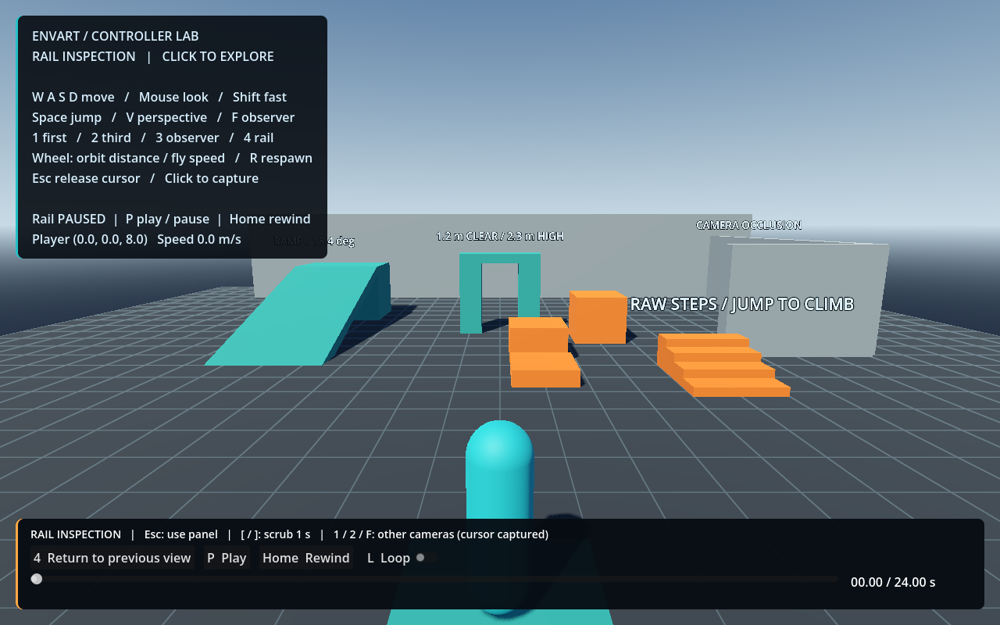

让相机沿你画的路线
检查整个场景。
用 Path3D + PathFollow3D + AnimationPlayer 绘制路线、安排停留、控制镜头，并随时返回玩家视角。你已有 Unity 经验，这份教程从熟悉的概念出发，带你实际修改项目中的巡检相机。

先记住三个分工：Path3D 决定“路线长什么样”，PathFollow3D 决定“走到哪里”，AnimationPlayer 决定“什么时候走到那里”。看向哪里由 Aim 和 FocusTarget 决定。它们可以独立调整。
01先跑起来
- 在 Godot 项目管理器选择 Import / 导入，选中仓库中的
GodotProject/envart-pipline/project.godot。已经打开本项目则跳过。 - 等待资源导入完成，按 F5 或编辑器右上角运行项目按钮。Mac 功能键被系统占用时可用 Fn + F5，或直接点击按钮。
- 按 4，切到轨迹相机；此时停在起点。按 P 开始，再按一次暂停。
- 按 Esc 释放鼠标，用下方滑条拖到 9.00 秒。你会看到镜头停在示例的观察位置。
- 按 4 返回之前视角。轨迹进度会保留，重新进入后按 P 继续。
| 任务 | 快捷键或面板 | 行为 |
|---|---|---|
| 进入 / 离开轨迹 | 4 / Enter rail camera | 离开时暂停，返回进入前的视角。 |
| 播放 / 暂停 | P / Play、Pause | 暂停保留时间；到达终点后再次播放从头开始。 |
| 回到起点 | Home / Rewind | 回到 0 秒并暂停。没有 Home 键时直接用面板。 |
| 前后检查 | [ / ] | 前后跳 1 秒并暂停。 |
| 指定时间 | 拖动下方滑条 | 以 0.01 秒为步长定位，并保持暂停。 |
| 循环 | L / Loop | 切换动画循环；开放路线回到起点时会切镜。 |
| 第一 / 第三人称 | 1 / 2；V 切换 | 需先点击游戏画面捕获鼠标。 |
| 自由观察 / 返回 | F 或 3 | 从轨迹视角按 F，可从当前镜头位置自由飞行。 |
| 玩家与观察移动 | WASD、Shift、Space、E/Q | Space 为玩家跳跃；E/Q 为自由观察升降。轨迹模式不驱动玩家。 |
轨迹快捷键在鼠标释放时也有效；玩家快捷键需要鼠标捕获。Esc 只释放鼠标，不暂停轨迹，方便操作面板；切到其他应用导致窗口失焦时会暂停轨迹。脚本不暂停世界，角色仍受重力影响。
02用 Unity 经验理解 Godot
下面是理解上的对应关系，并非 API 一一替换。Godot 主要通过节点组合能力，同一个 .tscn 场景既可以是完整关卡，也可以是可复用组件。
| Unity 中熟悉的东西 | Godot 中的对应概念 | 本项目中的例子 |
|---|---|---|
| GameObject + Transform | Node3D | RailCamera 根节点负责整体平移、旋转。 |
| Prefab / Prefab Instance | PackedScene / 实例化场景 | rail_camera.tscn 被放进测试场。 |
| MonoBehaviour | 附加到节点的脚本 | rail_camera.gd 挂在根节点。一个节点通常挂一个脚本，多种功能可拆成子节点。 |
| ScriptableObject、共享资源 | Resource | Curve3D、Animation、角色配置。资源可能被多个实例共享。 |
| Inspector 序列化字段 | @export 属性 | Aim Mode、Aim Target、Animation Name。 |
| SplineContainer | Path3D + Curve3D | 节点持有曲线资源，曲线存储控制点和手柄。 |
| 沿 Spline 移动的对象 | PathFollow3D | 设置 Progress Ratio 为 0.5，就放在沿路线长度的中间附近。 |
| Animation Clip / Timeline 的属性编排 | Animation + AnimationPlayer | 对 Progress Ratio 与 FOV 打关键帧。 |
| Cinemachine Brain 的相机选择职责 | 本项目的 CameraRig | 统一选择哪台 Camera3D 输出；目前直接切换，没有混合过渡。 |
| 事件回调 | Signal | 轨迹结束时发出 playback_finished。 |
| Assets 路径 | res:// | 指向 project.godot 所在目录，而不是 Git 仓库根目录。 |
坐标方向要重新建立习惯。本项目以 1 单位 = 1 米，Y 向上；Godot Camera3D 朝局部 −Z 看，默认模型正面约定可能不同。不要直接照搬 Unity 常见的 +Z 前方假设。
03认识文件和节点
在左下角 FileSystem / 文件系统中打开 res://controllers/rail_camera.tscn。它包含以下内容：
RailCamera ← rail_camera.gd：播放接口与朝向
├── Path3D ← Curve3D：你编辑的曲线
│ └── PathFollow3D ← progress_ratio：0 到 1
│ └── Aim ← 处理看向目标的旋转
│ └── Camera3D ← 实际镜头，FOV 被动画驱动
├── FocusTarget ← Marker3D：镜头注视点
└── AnimationPlayer ← inspection：24 秒原生动画改 Path3D 的曲线控制点，改变镜头走过的空间。
改 inspection 动画关键帧，改变速度、停留和镜头焦距感。
改 FocusTarget 或 Aim Mode，改变镜头看向哪里。
| 文件 | 你会在什么时候打开 |
|---|---|
demo/controller_lab.tscn | 运行完整测试场；查看角色、CameraRig、RailCamera 和 HUD 的连接。 |
controllers/rail_camera.tscn | 编辑样例路径、注视点和动画。修改源场景会影响引用它的实例。 |
controllers/camera_rig.gd | 理解四种模式的切换与返回规则。 |
demo/rail_controls.tscn | 运行时的底部面板，可单独复用或移除。 |
controllers/player_input.gd | 将输入动作转换为角色或相机指令。 |
04先找到编辑器的几个区域
F5 运行主场景，F6 运行当前场景。编辑轨迹时仍用 F5 试玩完整测试场。单独 F6 运行 RailCamera 场景没有完整测试场、玩家输入和 HUD，不适合作为第一次验证。
编辑器的 3D 视口和游戏相机是两套视角。编辑器里旋转视图，不会改动 Camera3D；需要修改相机节点或曲线，才能影响游戏镜头。
05编辑你的第一条路线
先移动已有点
- 停止游戏。双击
controllers/rail_camera.tscn，在左侧树里选 Path3D，确保中央在 3D 工作区。 - 将视口切到俯视或斜俯视，找到显示的曲线。选中节点后使用视口菜单的聚焦选择功能；Mac 没有数字小键盘时，可点击视口坐标轴或视图菜单切换方向。
- 在曲线工具栏选择点编辑工具，悬停图标查看工具提示。拖动一个曲线点，观察路线改变。拖动节点整体的 Transform 操纵器会移动整条路径，不是单个控制点。
- 选中曲线点后调整两侧的 Bézier 手柄。点决定经过的位置；手柄决定进入和离开的切线。较长手柄让弯曲更宽，过短或方向突变容易出现急转。
- 回到侧视或透视检查高度，避免俯视看起来合适、实际上路线穿过墙体或地面。
- 保存场景，按 F5、4、P，在游戏中验证整条路线。
增加点与调整曲线资源
选中 Path3D 后，用工具栏的 Add Point / 添加点工具增加控制点；删除使用对应的删除点工具。至少保留两个不同的位置。先练习拖动已有点，再增加新的点，可以减少“点加在了错误深度平面”的困惑。需要准确位置时展开 Inspector 的 Curve → Points，检查各点的 Position、In、Out 数值。
样例使用五个控制点，坐标相对于 Path3D：
| 点 | Position（米） | 作用 |
|---|---|---|
| 0 | (0, 3.5, 12) | 从出生区域后上方开始。 |
| 1 | (9, 5, 7) | 转到场景右前方。 |
| 2 | (12, 6, −2) | 从墙外上方绕行。 |
| 3 | (4, 7, −10) | 观察场景后侧。 |
| 4 | (−8, 4, −6) | 在坡道一侧结束。 |
整组移动时选 RailCamera 根节点。这样路线与 FocusTarget 一起移动。只移动 Path3D，会改变路线与注视点的相对关系。保持 Scale 为 (1, 1, 1)，优先调整控制点和位置；非均匀缩放会影响距离和方向的直观含义。
Bake Interval 控制曲线用于采样的缓存间距，示例为 0.1 米。急弯不够平滑时，先改善手柄，再考虑适当减小采样间距；不要把它当成播放速度。
06决定镜头看向哪里
选中根节点 RailCamera，在 Inspector 的脚本属性中选择 Aim Mode：
| 模式 | 如何设置 | 适用场景 |
|---|---|---|
| Look At Target | 把一个 Node3D / Marker3D 拖入 Aim Target。默认是子节点 FocusTarget。 | 围绕一个广场、建筑或关键区域巡检。 |
| Path Direction | 无需注视目标，镜头跟随路径前进方向。 | 沿走廊、道路或玩家动线前进。 |
- 保持 Look At Target，选中 FocusTarget。
- 调整它的位置，例如从 (0, 1, −2) 移到门洞中心附近。
- 选择 AnimationPlayer 并拖动动画时间，或运行后拖动底部滑条，检查多个时间点的构图。
FocusTarget 本身不渲染，是一个定位标记。它不应挂在相机下面，否则会随相机一起移动，难以表达“看向场景中的固定地点”。本组件使用 @tool，让目标朝向也能在编辑器预览中更新。
轨迹不会自动绕开障碍物。本轮刻意保留预定路线，避免自动避障改变巡检构图。相机穿墙时应调整路线或高度。第三人称的 SpringArm 避障并不自动适用于轨迹相机。
07用 AnimationPlayer 编排时间和 FOV
选中 AnimationPlayer，底部打开 Animation 面板，在动画下拉框中选择 inspection。你会看到两条属性轨道：
Path3D/PathFollow3D:progress_ratio
Path3D/PathFollow3D/Aim/Camera3D:fov这些路径相对于 AnimationPlayer 的动画根节点，本项目使用它的父节点 RailCamera。路径几何变了，动画仍然控制归一化进度，因此通常不需要重做关键帧。
| 时间 | Progress Ratio | FOV | 结果 |
|---|---|---|---|
| 0 s | 0.00 | 65° | 路线起点。 |
| 8 s | 0.35 | 60° | 到达约 35% 路程。 |
| 10 s | 0.35 | 60° | 与 8 秒相同的值，形成两秒停留。 |
| 24 s | 1.00 | 65° | 路线终点。 |
这是教程中的交互原理图，数值对应样例关键帧，不是实时运行 Godot。
练习 A：把停留延长到四秒
- 在 Progress Ratio 轨道选择 10 秒的关键帧，把时间改成 12 秒。可以横向拖动关键帧，也可在选中关键帧后的属性中输入准确时间。
- 将 FOV 轨道对应的 10 秒关键帧也移动到 12 秒，保持镜头在停留期间不变。
- 保持末帧 24 秒不变，则最后一段会变快。如果希望保持原来最后一段的速度，把两条轨道末帧都移到 26 秒，并把动画长度改为 26 秒。
- 保存并运行，检查 8–12 秒之间镜头是否完全静止。运行面板会读取新的动画长度，不需要改脚本。
练习 B：新增一个观察点
- 先在动画面板把时间光标放到目标时间，例如 16 秒，并固定 / 保持动画面板打开。
- 选中 PathFollow3D，在 Inspector 找到 Progress Ratio，输入想要的进度，例如 0.70。
- 点击属性旁的钥匙图标插入关键帧。如果提示创建轨道，确认路径指向现有的 PathFollow3D。
- 想停留一秒，则在 17 秒再插入相同的 0.70。避免误点到 Progress：那是按距离计量的另一个属性。本项目只动画化 Progress Ratio。
练习 C：改变镜头宽窄
选中 Camera3D，在目标时间设置 Fov 并用钥匙图标打关键帧。数值小，视野更窄；数值大，视野更宽。示例已有 FOV 轨道，只修改 Inspector 的静态 Fov 会被动画覆盖，应改关键帧值。默认沿用 Camera3D 的纵向 FOV 约定。
当前轨道采用线性插值，便于重复采样和理解。速度由“进度差 ÷ 时间差 × 曲线长度”近似决定；修改路线长度会改变同一动画的世界空间速度。若要整体放慢，可降低 AnimationPlayer 的 Speed Scale（例如 0.5）；面板仍显示动画时间，实际播放用时会加倍。
循环有三种不同含义。动画循环决定时间是否从末尾回到开头；Curve3D 的闭合决定路线几何是否首尾连接；PathFollow3D 的 Loop 决定进度越界是否回绕。本组件让 PathFollow3D 的 Loop 保持关闭，以便 1.0 能停在终点。样例是开放路线，打开动画循环会从终点切回起点；要无缝巡航，需要另行设计几何、切线、朝向和 FOV 的连续性。
08在编辑器中预览
- 打开轨迹源场景，选中其 Camera3D，在 3D 视口启用相机预览（Preview）。这样看到的是相机画面，而不是编辑器自由视图。
- 选中 AnimationPlayer，打开 inspection，使用底部动画面板的播放、暂停、时间标尺拖动来预览。
- 查看进度轨道如何让相机移动，再分别调整曲线和 FocusTarget。脚本在编辑器中更新注视方向，但不会自动启动播放。
- 单独打开轨迹场景时没有关卡背景，这是正常的。完整构图以 F5 运行测试场为准。
需要一边看关卡一边预览时，打开 controller_lab，右击 RailCamera 实例启用 Editable Children / 可编辑子节点，展开并选择内部 Camera3D 和 AnimationPlayer。此方式适合预览；要修改可复用样例，优先回到源场景，避免把源资源改动与实例覆盖混在一起。
本地场景与运行时场景要分清。游戏运行时 Scene 面板可能有 Local / Remote。Local 是待保存的编辑内容；Remote 是正在运行的节点。Remote 中的临时修改不等于保存到 .tscn，停止运行后会丢失。正式改路线请停止游戏后编辑 Local。
三个实际时间点
09理解四种视角的切换
| 操作 | 预期结果 |
|---|---|
| 第三人称 → 4 → 4 | 回到第三人称；轨迹保持离开时的进度。 |
| 第一人称 → 4 → 4 | 回到第一人称；恢复玩家视角。 |
| 自由观察 → 4 → 4 | 回到之前自由观察的位置、方向和 FOV。 |
| 轨迹 → F | 从当前轨迹镜头的实际位置、方向和 FOV 脱离，自由检查细节。 |
| 轨迹 → 1 / 2 | 直接回到对应玩家视角；轨迹暂停。 |
| 轨迹 → R | 玩家回到出生点并退出轨迹；轨迹时间仍保留。要重置轨迹，用 Home。 |
除轨迹快捷键外，表中玩家与自由观察快捷键都需要先点击游戏画面捕获鼠标。当前切镜是直接切换；没有 Cinemachine 式的过渡混合。自由观察不受碰撞约束；轨迹也不自动避障。
CameraRig 是当前视口的选择入口；RailCamera 只提供路径、播放和朝向。后续增加新的相机时，应让同一个管理入口选择输出，避免多个脚本同时切换 Current 或写同一个相机的 Transform。
10把轨迹放进自己的场景
先做一份独立场景
- 在 FileSystem 中复制
controllers/rail_camera.tscn，例如命名为demo/my_inspection_rail.tscn，打开复制品。它保留同一控制脚本，但拥有自己的内置曲线与动画定义。 - 在复制品里修改路线、注视点和 inspection 动画。根节点、Path3D、PathFollow3D、Aim、Camera3D 和 AnimationPlayer 的名字先保持不变，脚本和动画轨道使用这些内部路径。
- 打开你的关卡场景，将复制品从 FileSystem 拖入场景树，形成 RailCamera 实例。
- 让 RailCamera 和 Player 排在 CameraRig 前面，保证相机管理器初始化时依赖节点已经就绪。移动 RailCamera 根节点让路线覆盖关卡。
- 选中 CameraRig，把 RailCamera 实例拖入 Inspector 的 Rail Camera 字段。保留原有 Target → Player 连接。
- 若需要底部面板，将
demo/rail_controls.tscn实例化到 CanvasLayer 下，把它的 Director 字段指向 CameraRig。 - 保存、运行，验证 4 → P → 暂停 → 返回玩家。
YourTestScene
├── World
├── RailCamera ← 你的轨迹实例
├── Player
├── CameraRig ← Target = Player；Rail Camera = RailCamera
├── PlayerInput ← Player = Player；Cameras = CameraRig
└── HUD (CanvasLayer)
└── RailControls ← Director = CameraRig如果只要独立轨迹镜头：可以省略玩家、CameraRig 与面板，由自己的脚本调用 activate()、play()、pause()。切出时调用 deactivate() 并明确激活另一台相机；deactivate 只暂停和释放组件状态，不会替你选择下一台 Camera3D。
资源共享要特别注意。Godot Resource 的共享行为容易让 Unity 使用者误以为“只改了这个实例”。示例曲线、动画及动画库设置了 Local To Scene，帮助运行时实例隔离；它不等于编辑器里修改共享资源自动生成独立副本。要不同路线，推荐复制整个轨迹场景。若选择实例覆盖方式，需要对 Curve 以及要改的 Animation / AnimationLibrary 使用 Make Unique，并确认保存的文件归属。
若复制到另一个 Godot 项目，除场景和脚本外还需迁移 ea_rail_* Input Map 动作。动作名在代码中有约定，按键可在 Project → Project Settings → Input Map 中重新绑定，不必照搬项目的全部设置。
11用它做一次可重复巡检
建议先用同一条路线检查一小段白盒和对应的美术版本：
- 选择 0、9、18、24 秒作为观察时间，记录轨迹场景文件、动画名、Aim Mode、FocusTarget、FOV 和画面尺寸。
- 在白盒版本依次暂停到这些时间点，保存截图并标注通行、视线和构图问题。
- 装饰场景后保持相机相关资源不变，再取同样时间点进行比较。
- 发现问题后，从轨迹视角按 F 脱离，靠近观察；返回轨迹后重新定位到记录时间。
- 最后用玩家视角实际走一遍。轨迹画面不能代替通行与碰撞验收。
- 路径全程没有穿过地面、墙体或装饰物。
- 暂停后镜头稳定，关键机位能看清设计目标。
- 切出轨迹不会继续推进隐藏镜头。
- 修改曲线后重新检查所有取样时间点。
- 比较时记录画面分辨率、场景状态和光照配置。
固定时间与相机配置可以重复采样镜头。动态物体、时间变化的材质、粒子或光照仍可能使画面不同；本轮未实现自动截图批处理、视频导出或场景状态锁定。
12遇到问题时从哪里查
按 4 没反应，或者面板按钮是灰色
检查 CameraRig 的 Rail Camera 引用、Curve3D 是否至少有两个不同的点、曲线长度是否大于零，以及 Animation Name 是否仍为现有动画名 inspection。无效轨迹不会抢走当前相机。查看 RailCamera 节点旁的配置警告。
编辑器里看不到路径
选中的是 Path3D，而不是根节点或 Camera3D。确认 Curve 不是空资源，切到 3D 工作区并聚焦该节点。如果实例子节点不可选，打开轨迹源场景，或者启用 Editable Children。
相机不动，但时间在走
确认当前选的是轨迹视角。检查 progress_ratio 轨道是否启用、路径是否正确、关键帧是否不同。8–10 秒停留是样例的预期行为。Speed Scale 为 0 时动画不会推进。
我改了 FOV / Progress Ratio，一播放又变回去
动画在每帧写入这些属性。请改对应关键帧，而不是只改节点静态值。避免同时对 Progress 和 Progress Ratio 创建轨道。
镜头看反了或发生翻转
先确认使用 Path Direction 还是 Look At Target。Camera3D 的前方是 −Z；保留 PathFollow3D 的 Use Model Front 关闭。路径方向模式避免急弯和竖直段，目标模式避免让注视点穿过相机。极点虽有数值回退，仍应人工检查构图连续性。
循环时相机突然跳回原处
示例路线是开放的，这是动画时间回到 0 的结果。关闭 Loop 让镜头停在终点；需要无缝循环时，另外设计闭合路线和连续切线，并匹配首尾朝向与 FOV。
拖动运行时滑条没有效果
先按 4 进入轨迹模式，再按 Esc 释放鼠标。其他视角下滑条故意禁用；拖动会暂停，需按 P 继续。进入其他应用导致窗口失焦也会暂停。
改完路径后，其他地方的路线也变了
你可能修改了被复用的源场景或共享 Resource。先撤销，再复制轨迹场景，或对需要独立修改的资源 Make Unique。Local To Scene 的运行时隔离不能替代编辑器中的资源归属管理。
停止运行后刚才的修改没了
检查是否改在 Remote 运行时节点上。停止游戏后，在 Local 编辑场景并保存。面板里的循环开关和播放进度也是运行时状态，不自动回写到场景文件。
F6 打开后只有空背景
你运行了独立轨迹组件。用 F5 运行主测试场，或者明确将自己的关卡设为主场景；独立组件没有完整测试环境。
13接口与进一步阅读
自动巡检可以直接调用组件接口，无需模拟键盘：
# 已通过 Inspector 配置好 CameraRig 与 RailCamera
cameras.set_mode(EACameraRig.Mode.RAIL)
cameras.rail_camera.scrub(9.0) # 定位并暂停，立即更新位置、朝向与 FOV
cameras.rail_camera.play() # 从此处继续
cameras.rail_camera.pause() # 保留进度
cameras.rail_camera.rewind() # 回到 0 秒并暂停
cameras.toggle_rail_view() # 返回进入前的视角seek_seconds(t) 定位时保留当前播放 / 暂停状态；scrub(t) 一律暂停。手动定位到末尾不会发出自然播放结束信号；需要知道播放完成时连接 playback_finished。若截图，在采样后还要等渲染完成，不要在设置进度的同一行立即读取旧画面。
验证与当前范围
本项目已在 Godot 4.7.2 上验证轨迹采样、播放暂停、FOV、停留、终点、循环、四种模式切换、坐标变换、缺失目标与退化朝向、实例隔离及原控制器回归。图形测试使用实际渲染和引擎输入事件；上面的图片来自当前测试场。原生编辑器 UI 的布局会随版本和个人设置变化。
相关测试位于 tests/rail_camera_smoke.gd、tests/controller_smoke.gd 与 tests/controller_visual.gd。当前没有镜头混合、轨迹自动避障、多轨迹选择器或自动截图按钮。
- Path3D 官方文档：持有曲线资源的节点。
- PathFollow3D 官方文档：进度、旋转与回绕行为。
- Curve3D 官方文档：控制点、手柄与采样。
- Bézier、曲线与路径：曲线原理和距离采样。
- 动画面板入门：属性轨道与关键帧编辑。
- AnimationPlayer 官方文档：播放、暂停、定位和速度。
- 场景组织：场景边界和显式依赖。